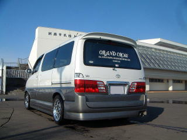

| 納車された時の画像です | 後ろ姿です。いじりがいのある車です |
| １７インチホイルを装着しました。 ワークのホイルです。 |
ケンスタイル３点キットの装着です |
| リアです。ルーフスポイラーが欲しい所です | エアロと同様ケンスタイルK'sマフラーです。 |
| １８インチアルミを装着しました。 レイズのリボルバーです。 |
|
| スタットレスは前装着していた１７インチです。 | とうとうリアルーフスポイラを装着しました。 |
| ZEUSのオーバーフェンダーを装着しました。 ３ｾﾝﾁﾌｪﾝﾀﾞｰが隠れるので、少し低く見えます。 |
リアです。 |
|  | |
| ファブレスのリアバンパーを装着しました。 | ファブレスのマフラーを装着しました。 エンジンをかける時にビビリ音がします。 |
 |
|
| エボリューションのサイドパネルを装着しました ウインカーのクリア化も自作しています |
|
| 内装です。 | ルーフボックスです。結構入ります。 |
| １９インチのワークです。結構リムは深いです。 | |
| 横から タイヤは235-35なので、空気圧を目一杯入れています。 |
フロント |
 |
|
| リア | ２００４年最後の写真です |
| 正面から | リア |
| 間接照明は２種類設置しています。この他にも数個付けているのでバッテリの調子が悪くなっています。 | ２００５年フルーツ狩りの記念です。 |
 |
|
| 冬のスタッドレスです | |